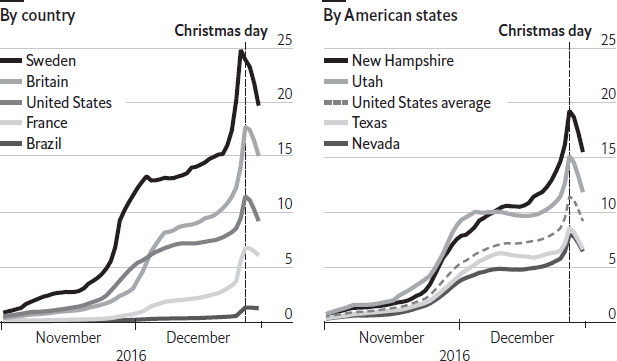

At the start of every year millions of people make resolutions promising improvements in their lives. Alcohol is forsworn, exercise embraced, hobbies sought. But though it may make sense to respond to the indulgences of Christmas with catharsis, the tradition of new-year resolutions is far older than the establishment of the Christian festival, or even the placing of the new year in the middle of winter.
The Babylonians were the first civilisation to leave records of new-year festivities, some 4,000 years ago. Their years were linked to agricultural seasons, with each new year beginning around the spring equinox (late March, by our modern calendar). A 12-day festival to celebrate the renewal of life, known as Akitu, marked the beginning of the agrarian year. During Akitu people keen to curry favour with the gods would promise to repay their debts and to return borrowed objects. In a similar vein the ancient Egyptians would make sacrifices to Hapi, the god of the Nile, at the beginning of their year in July, a time when the Nile’s annual flood would usher in a particularly fertile period. Offering sacrifices and prayers, they would request good fortune, rich harvests or military successes.
The Romans continued the habit, but also changed the date. The Roman year is said to have originally had ten months, starting in March around the spring equinox, plus another 60-odd winter days that were not included in the named months. Around 700BC, two more months were added, but it was not until 46BC, when Julius Caesar introduced a reformed calendar, that January was officially established as the beginning of the year. Because this was the date on which the city’s newly elected consuls began their tenure, it marked a shift in calendric emphasis from agrarian cycles to civil rotations. Roman new-year festivities included the worship of Janus, the god of beginnings and endings, after whom the month of January is named. But the persistence of these traditions annoyed later Christians, and in medieval Europe attempts were made to celebrate the new year on dates of religious significance, such as Christmas, or the Feast of the Annunciation in March. Attitudes to resolutions also changed. Prayer vigils and confessions were used to pledge allegiance to religious values. At the end of Christmas feasts, some knights were said to have taken an oath known as “The Vow of the Peacock”, in which they placed their hands on a peacock (a bird considered noble) in order to renew their commitment to chivalry. This moral flavour to the pledges persisted. A 17th-century Scotswoman wrote in her diary of taking Biblical verses as starting points for resolutions (“I will not offend anymore”).
By the time the phrase “new-year resolutions” first appeared, in a Boston newspaper in 1813, the pledges were losing their religious overtones. An article published a few years earlier in Walker’s Hibernian Magazine, Or, Compendium of Entertaining Knowledge, an Irish publication, satirises the practice. It states that doctors had solemnly pledged to “be very moderate in their fees” and statesmen to “have no other object in view than the good of their country”. Yet the making of unrealistic, over-optimistic pledges has remained a tradition. According to polls, around half the population of Britain and America now make resolutions – but, with less fear of divine retribution to motivate them, fewer than 10% keep them.
Every March, for about a week, Dublin’s corridors of power empty out. Government ministers and officials pack their bags as part of an annual soft-power push like no other. They head abroad on promotional trips linked to St Patrick’s Day, the Irish national holiday that falls on March 17th. Dozens of countries play host to high-ranking Irish officials, and many more will stage their own celebrations of Irishness. The highlight of this diplomatic assault is the annual meeting between the Irish taoiseach, as the prime minister is known, and the president of the United States. Few countries enjoy such high-level access and exposure on their national day. But how did the celebration of a devout fifth-century missionary become a global phenomenon – one in which people drink Irish whiskey, dress up in green and demand that people kiss them because they are Irish (even if they are not)?
St Patrick’s Day is an international celebration because of emigration. During and after the famines that afflicted Ireland in the 19th century, some 2m people left the island, the majority settling in America and Britain. By the 1850s, the Irish accounted for up to a quarter of the population of cities like Liverpool and Boston. Within these communities, an Irish identity emerged, based on a strong Catholic faith and the political cause of the day: independence from Britain. This nationalist identity was especially celebrated on St Patrick’s Day when, in America and elsewhere, public sermons and speeches celebrating Irish heritage became common. In 1852, the Catholic archbishop of New York noted that not only do the Irish “cherish fond memory for the apostle of their native land, but they propagate it, and make the infection as if it were contagious”.
Soon the contagion caught on. By the mid-20th century the holiday had evolved into a celebration of all things Irish, and was well established across America. With some 40m Americans claiming Irish heritage it also presented an opportunity for American politicians to curry favour among the diaspora. Irish migrants had long been victims of prejudice, but that changed as the 20th century wore on. The wariness shown in job advertisements declaring “Irish need not apply” gave way to a more positive image of witty types, who were not averse to an occasional glass of the strong stuff. This helped to fuel the idea of St Patrick’s Day as an excuse for a party. That the Irish had managed to work their way up the social ladder in the cities where they made their home added to their image as plucky underdogs.
In Dublin, the national festival can bring in as much as €70m ($87m), according to one estimate. And now there is the Global Greening, in which landmarks from the Great Wall of China to the Eiffel Tower in Paris are bathed in green light. Celebrations have even been held on the International Space Station. Business deals are struck on trade missions and dignitaries take the opportunity to be snapped having the craic with pints of Guinness in their hands. Pubs heave, parades march and for one day revellers raise a glass to Ireland and its globalising patron saint.
Unlike other Christian holidays, Easter can move around a lot from one year to the next, its date sometimes varying by more than a month. It falls between March 22nd and April 25th for the Western church, and between April 4th and May 8th for the Eastern church. This in turn determines the dates of public holidays, school holidays and the timings of school terms in many countries. Why does Easter move around so much? Be warned: the answer is rather technical.
According to the Bible, Jesus held the Last Supper with his disciples on the night of the Jewish festival of Passover, died the next day (Good Friday) and rose again on the third day (ie, two days later, on the Sunday). The beginning of Passover is determined by the first full moon after the vernal equinox, which can occur on any day of the week. To ensure that Easter occurs on a Sunday, the Council of Nicaea therefore ruled in 325AD that Easter would be celebrated on the Sunday after the first full moon on or after the vernal equinox. But there’s a twist: if the full moon falls on a Sunday, then Passover begins on a Sunday, so Easter is then delayed by a week to ensure that it still occurs after Passover. To confuse matters further, the council fixed the date of the vernal equinox at March 21st, the date on which it occurred in 325AD (it occurs on or around March 20th), and introduced a set of tables to define when the full moon occurs that do not quite align with the actual astronomical full moon (which means that, in practice, Easter can actually occur before Passover).
The earliest possible date for Easter occurs when the notional full moon falls on March 21st itself, in a year in which March 21st falls on a Saturday. Easter is then celebrated on Sunday March 22nd, a rare event that last happened in 1818 and will next take place in 2285. The latest possible date for Easter occurs when there is a full moon on March 20th, so that the first full moon after March 21st falls a lunar month or 29 days later, on April 18th. If April 18th falls on a Sunday, then the special Sunday rule applies, and Easter is celebrated the following Sunday, or April 25th. This last happened in 1943, and will next happen in 2038. There is therefore a 35-day window in which Easter can fall, depending on the timing of the full moon relative to March 21st. Eastern Christianity applies the same basic rule but uses the older Julian calendar, which is currently 13 days behind the Gregorian calendar, giving a different range of possible dates. This can pose problems.
There have been various proposals to change the way the date of Easter is calculated. At a meeting held in Aleppo in 1997, representatives of several churches proposed that a new system be adopted from 2001, relying on actual astronomical observations rather than tables to define the dates of the vernal equinox and the full moon. This would have ensured that Easter occurred on the same day for both branches of the church. But the proposal was not adopted. In 1928 Britain’s parliament passed a law, which has not been implemented, that would define Easter as the Sunday after the second Saturday in April. Another proposal would define Easter as the second Sunday in April. Several churches, including the Catholic church, say they are open to the idea of setting the date of Easter in this way, so that its date varies by no more than a week. But until there is widespread agreement, its date will continue to jump around within a five-week window.
Do you need to see a dentist, get some building work done, or buy a loaf of bread? If you live in continental Europe, you will know that trying to do any of these things in August is generally not a good idea. A surprising number of businesses observe the long-established tradition of closing their doors for the whole month (though some prefer to do so in July). Pictures of hammocks and palm trees adorn the websites of small businesses across the continent, wishing customers a happy holiday and advising them to come back again in September. “Summer is near and Frankie will take a nap for a while,” says the site of Frankie’s Social, a bar in Limassol, Cyprus, without giving any indication of when it might open again. Why do Europeans take off August en masse?
The idea that summer is for play, not work, seems hard to shake for many Europeans. The habit is especially ingrained in old manufacturing sectors. During and after the industrial revolution, entire factories in northern England would decamp to the same beachside resorts. Until the 1980s Volkswagen, a German carmaker, would charter trains at the start of summer break to move thousands of Italian workers from its plants in Wolfsburg, which turned into a ghost town, to their homes in Italy. One reason is that an assembly line does not function very well without a full complement of workers, so it makes sense for them all to take time off together. It is also a good opportunity to perform any maintenance or upgrades on the factory floor.
Yet the practice of downing tools in the midst of summer has spread well beyond the industrial sphere. It is harder to apply the same logic to restaurants and cafés, particularly those serving tourists. “We are open the rest of the year, seven days a week, so these days are earned,” says Rita Zubelli, who works in an ice-cream parlour in Milan that, bafflingly, shuts down at the height of the summer. In such sectors the practice of a shut-down seems driven more by habit, and the social acceptance of holidaymaking at that time, than by business logic.
If you are a tourist looking for an ice-cream, a local trying to find a plumber, or even a journalist trying to write a story, Europe’s attitude to summer can be deeply frustrating. Yet despite, or perhaps because of, their leisure-seeking ways, Europeans are the most productive workers in the world. Dan Rogers of Peakon, a consultancy, thinks the dip in employee productivity over holiday periods could be a good reason to accept the European summer. From an employer’s perspective, he says, “if your employees are less productive, and your business partners less responsive, the sensible decision would be to shut up shop”.
Every November, tens of millions of Americans crisscross their country to spend Thanksgiving with family and friends. With any luck, turkey, pumpkin pie and good cheer await. The story of the celebration is enshrined in American lore. In November 1620 a group of English Pilgrims landed at Cape Cod, Massachusetts, after two months aboard the Mayflower. They were helped through the deprivations of their first winter by local Wampanoag Indians, who offered provisions and advice. After a successful harvest the next year, 50 Pilgrims and 90 Indians celebrated with a turkey feast. The rest is supposedly history. But history is full of half-truths, and Thanksgiving is no exception. The way Americans celebrate the holiday today – as an annual, secular event – is a 19th-century invention.
The Pilgrims were a stern bunch. Holidays were scarce. Celebrating Christmas, Easter or saints’ days was forbidden. Instead, Pilgrims observed days of public fast or thanksgiving. These were proclaimed in response to specific events, and therefore varied each year. It was believed that fasting could temper a looming crisis, such as a drought or invasion, while thanksgiving marked a good harvest or military victory. Prayer was at the heart of these events. Evidence about the gathering in 1621, albeit just four sentences long, comes from a letter by the Pilgrims’ leader, Edward Winslow. Wampanoag Indians appeared along with their chief, Massasoit, “whom for three days we entertained and feasted”. Pilgrims made no mention of the event in later years (which was not a thanksgiving in the proper sense, since it involved no prayer) and relations with the Indians quickly soured. Within a generation they were at war. The Pilgrims won, and in 1676 declared a day of thanks, displaying the impaled head of Massasoit’s son – “meat to the people inhabiting the wilderness”, in the words of one Pilgrim. New Englanders continued to observe days of thanksgiving over the next 200 years, carrying the custom with them as they moved to the south and the west.
The holiday gradually assumed a semi-fixed status. Mostly it was celebrated as a local or statewide affair initiated by a minister or governor. It might be held in October, November, December or even January. A few national holidays were proclaimed in America: George Washington created one to mark the adoption of the Constitution in 1789; James Madison did so to celebrate the end of the War of 1812. But the credit for securing a fixed day for Thanksgiving, annually and nationwide, goes to an unflagging writer called Sarah Josepha Hale. She rarely alluded to the Pilgrims herself as she pursued the idea of a patriotic celebration for autumn over the course of two decades. She petitioned presidents and governors, and Godey’s Lady’s Book, her popular women’s periodical, ran editorials and moralising fiction championing the cause. Success came in 1863 during the civil war. The president, Abraham Lincoln, declared the day a national holiday after victories for the Unionist armies at Gettysburg and Vicksburg earlier that year. In 1941 Congress wrote the holiday into law, to be celebrated on the fourth Thursday in November.
Nationwide observance of Thanksgiving meant that the holiday became an increasingly secular affair. In 1878 the New York Times complained that the day had “lost its sombreness and with that most of its religious significance”. Local parades were held, with Macy’s staging its first in 1924. For Hale, the holiday was the “best exponent … of the prosperity and happiness of the American people”. It was a day to celebrate abundance and instil American values: patriotism, devotion to family and hard work. Never mind that the Pilgrims would have barely recognised (and would probably have disavowed) the modern celebration. What was needed was a founding myth for a young nation.
Christmas pop songs are a genre in their own right, and a money-spinner at that. By the end of 2017 the 13 most popular Christmas songs on Spotify, a music-streaming service, had amassed 1bn plays between them. The most popular of them, All I Want for Christmas Is You, written in 15 minutes and recorded by Mariah Carey in 1994, accounted for 210m of those plays, having earned over $60m in royalties since its release.
Despite its ubiquity during December, the appeal of festive music varies significantly by geography. Analysis of data from Spotify, covering pre-Christmas listening in 2016 across 35 countries, and for every American state, reveals that music lovers in Sweden and Norway listen to festive tunes most frequently. One in every six songs they streamed on Spotify during December 2016 received this classification (the list includes some 1,500 Christmas songs performed in English and local languages). By contrast, during the same period in Brazil – a country with a comparable proportion of Christians – just one song in 150 was Christmas-themed. Listening habits in American states also varied, though to a smaller degree: in New Hampshire Christmas songs accounted for one in nine streams, whereas in Nevada, the state where such tunes are least common, it was one in 20.
What might cause these differences between Spotify users’ appetites for festive-themed music? Daylight hours, weather and religiosity appear to be big drivers of behaviour. After accounting for the amount of time remaining before Christmas and the day of the week – festive songs are most popular at the weekend – it turns out that Christmas listening is most prevalent in countries that have the fewest daylight hours and the wettest weather. For countries in the northern hemisphere, every additional hour of darkness is correlated with a three-percentage-point increase in the amount of Christmas listening on Spotify. The weather affects festive spirits too. Rainy days increase Christmas listening by 0.5 percentage points over dry days. In America, festive listening appears similarly fickle across states. An additional hour of darkness increases listening by 1.5 percentage points, and colder weather brings a slight increase in listening. The biggest bump is reserved for snowfall, which causes a two-percentage-point increase in streaming. And states that are more pious – measured by the percentage of people in the state that report attending weekly worship – have a greater propensity to listen to Christmas-themed music.
Streaming of Christmas songs per day*, as % of total music streaming, 2016

Sources: Spotify; The Economist
*Seven-day moving average
That the weather and daylight hours drive consumer behaviour is not surprising. Walmart, America’s biggest retailer, has long known that sales of strawberry-flavoured Pop-Tarts, a snack food, rise sevenfold ahead of a hurricane. But daylight, weather and religiosity together explain only about 50% of the variation of Christmas music between countries and between states; what explains the rest of it is unclear. But the implications for the music industry are clear: snow and rain boost consumption, and thus royalties. A mild winter in November and December, with 20% fewer snow days than average, would reduce royalties from Ms Carey’s infectious hit by about $10,000. She, and other composers of festive songs, are no doubt dreaming of a white Christmas.
There were no neatly wrapped presents. Nor were there tinselled trees or Santa Claus. Christmas in pre-industrial Europe and America looked very different from today’s iteration. Drunks, cross-dressers and rowdy carollers roamed the streets. The tavern, rather than the home or the church, was the place to celebrate. “Men dishonour Christ more in the twelve days of Christmas, than in all the twelve months besides” despaired Hugh Latimer, chaplain to King Edward VI, in the mid-1500s. Some 200 years later, across the Atlantic, a Puritan minister decried the “lewd gaming” and “rude revelling” of Christmastime in the colonies. Those concerns seem irrelevant now. By the end of the 19th century, a rambunctious, freewheeling holiday had turned into the peaceable, family-centred one we know today. How did this change come about?
In early modern Europe, between about 1500 and 1800, the Christmas season meant a lull in agricultural work and a chance to indulge. The harvest had been gathered and the animals slaughtered (the cold weather meant they would not spoil). The celebration involved heavy eating, drinking and wassailing, in which peasants would arrive at the houses of the neighbouring gentry and demand to be fed. One drinking song captured the mood: “And if you don’t open up your door / We will lay you flat upon the floor.” Mostly this was tolerated in good humour – a kind of ritualised disorder, when the social hierarchy was temporarily inverted. Not everyone was so tolerant. In colonial Massachusetts, between 1659 and 1681, Puritans banned Christmas. They expunged the day from their almanacs, and offending revellers risked a five-shilling fine. But the ban did not last, so efforts to tame the holiday picked up instead. Moderation was advised. One almanac-writer cautioned in 1761 that “The temperate man enjoys the most delight / For riot dulls and palls the appetite”. Still, Christmas was a public ritual, enacted in the tavern or street and often fuelled by alcohol.
That soon changed. Cities expanded at the start of the 19th century to absorb the growing number of factory workers. Vagrancy and urban poverty became more common. Rowdiness at Christmas could turn violent, with bands of drunken men roaming the streets. It’s little surprise that members of the upper classes saw a threat in the festivity. In his study of the holiday, Stephen Nissenbaum, a historian, credits a group of patrician writers and editorialists in America with recasting it as a domestic event. They refashioned European traditions, like Christmas trees from Germany, or Christmas boxes from England in which the wealthy would present cash or leftovers to their servants. St Nicholas, or Santa Claus, whose December name day coincided with the Christmas season, became the holiday’s mascot. Clement Clarke Moore’s poem A Visit from St Nicholas, first published in 1823, helped popularise his image. In it, a jolly Santa descends via reindeer-pulled sleigh to surprise children with presents on Christmas Eve. Newspapers also played their part. “Let all avoid taverns and grog shops for a few days,” advised the New York Herald in 1839. Better to focus, it suggested, on “the domestic hearth, the virtuous wife, the innocent, smiling, merry-hearted children”.
It was a triumph of middle-class values, and a coup for shop-owners. “Christmas is the merchant’s harvest time,” a retail magazine enthused in 1908. “It is up to him to garner in as big a crop of dollars as he can.” Soon this new approach to Christmas would become a target of criticism in its own right, as commercialised and superficial. Nevertheless, it lives on. Merry Christmas.